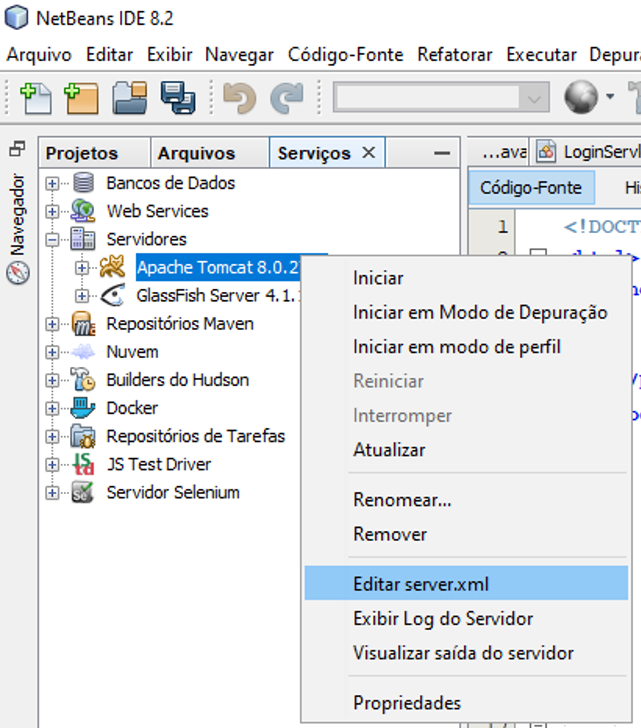
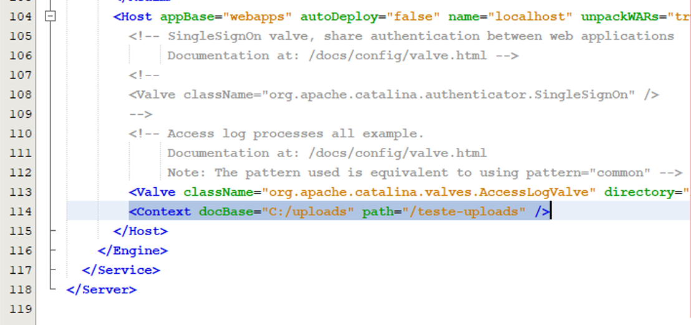

Exemplo de upload
Instruções para uso no Windows e servidor Tomcat:
-
Criar o diretório
C:\uploads onde os arquivos serão salvos após o upload.
- Se quiser alterar o diretório, alterar o valor no
@WebInitParam no UploadServlet
-
Configurar o Tomcat para criar uma raíz de contexto para acessar o conteúdo do diretório
C:\uploads através da Web.
-
Editar o arquivo server.xml do Tomcat: pelo Netbeans, na aba serviços acessar a opção "Servidores", escolher o Tomcat, clicar com o botão direito e selecionar opção "Editar server.xml".

-
No arquivo, adicionar o trecho
<Context docBase="C:/uploads" path="/teste-uploads" /> antes de fechar a tag </Host> e salvar.

- Reiniciar o Tomcat, acessar o link /upload e testar.